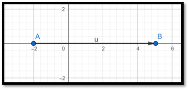
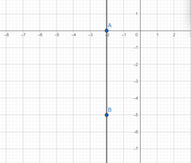

Pregunta de Elección Múltiple Pregunta - Un atleta corre desde un punto P1 (-2) hasta un punto P2 (5). Determine la distancia recorrida y seleccione que gráfica se asemeja al planteamiento. Respuestas Opción 1 Opción a: 7u Opción 2 Opción b: 7 Opción 3 Opción c: -7 Opción 4 Opción d: [7] Retroalimentación Opción correcta Incorrecto Incorrecto Incorrecto Solución Opción correcta (Retroalimentación) Incorrecto (Retroalimentación) Incorrecto (Retroalimentación) Incorrecto (Retroalimentación) Pregunta ¿Qué gráfica se asemeja al planteamiento? Respuestas Opción 1  Opción 2  Retroalimentación Opción correcta Incorrecto Solución Opción correcta (Retroalimentación) Incorrecto (Retroalimentación)